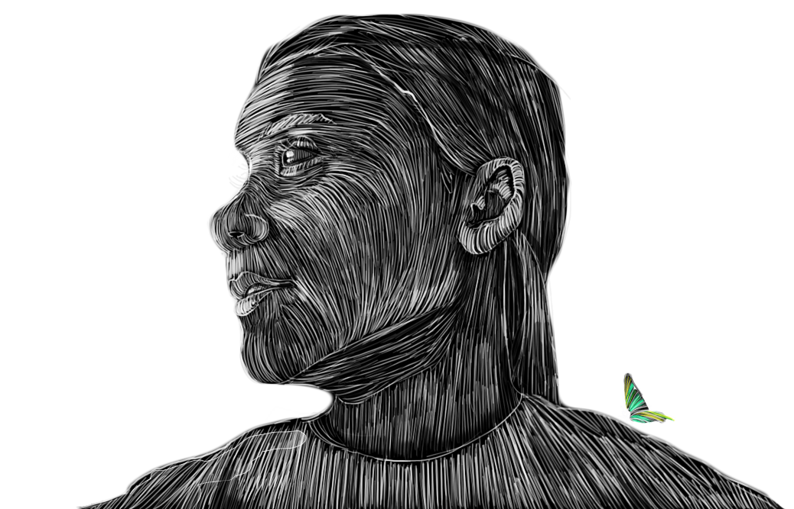

GRETA THUNBERG
ANDRÉ NUSSBAUMER 26TH AUGUST 2023


GRETA THUNBERG
ANDRÉ NUSSBAUMER 26TH AUGUST 2023
Of course, such altruism attracted a lot of criticism.
In what world are we living in, that a girl protecting our home is a target for mockery? Imagine smearing someone who wants a better world for everyone. These can only be the kind of people who turned heaven to hell. Of course, these people who attack her are merely projecting, thinking that humans act solely on their best interest, and can't ever be altruistic, because, that's not who they are nor ever will be, I mean, imagine these soulless individuals doing something for the betterment of mankind and not solely for the betterment of their masters financial reports.Who would be against having planet earth's best interests at heart?
Rebel News, for instance, who the CEO was a former tobacco industry lobbyist, and is now an Oil lobbyist, receiving funding from the Koch Brothers and other far-right conservatives whose fortunes rely exactly on mankind not being able to move forward, because moving forward means leaving these dinosaurs and their industries behind.Jordan Peterson of course, who now works at the dailywire which is widely known to receive money from Young America's Foundation that in turn has received money from the, once again, Koch Brothers. I now understand why he's always crying, he's in a cognitive dissonance between knowing the right thing to do yet choosing to be a tool. Must be painful, knowing man is inherently good, yet choosing to be bad. Must be a literal hell, since a real man has no price.
Andrew Tate, I mean, he converted to Islam, so, is there really anything else to say about why would he attack a girl who wants to reform the Oiling industry? Saudi money, anybody? Surely for someone so virile, attacking a young girl doesn't seem very manly, but what do I know. It does indeed exude small dick energy.Conclusion
If you want to know someone's intentions just listen to them closely, and that's why I approve of Greta having all the hate comments lingering on her instagram. I am against all types of censorship. Even if someone's being hateful or saying things we don't like to read. I think such words tell always more about those who spew them than the people they're talking about. Censorship is never good even if we think what we're doing is for the better. He, who gossips, unknowingly reveals more about himself than the person he's gossiping about. This is why I decided to open a section dedicated to honor the one's I think are making the world a better place. There's nothing more honorable than standing up against those destroying our futures in the name of a digital currency that sits in a digital database.